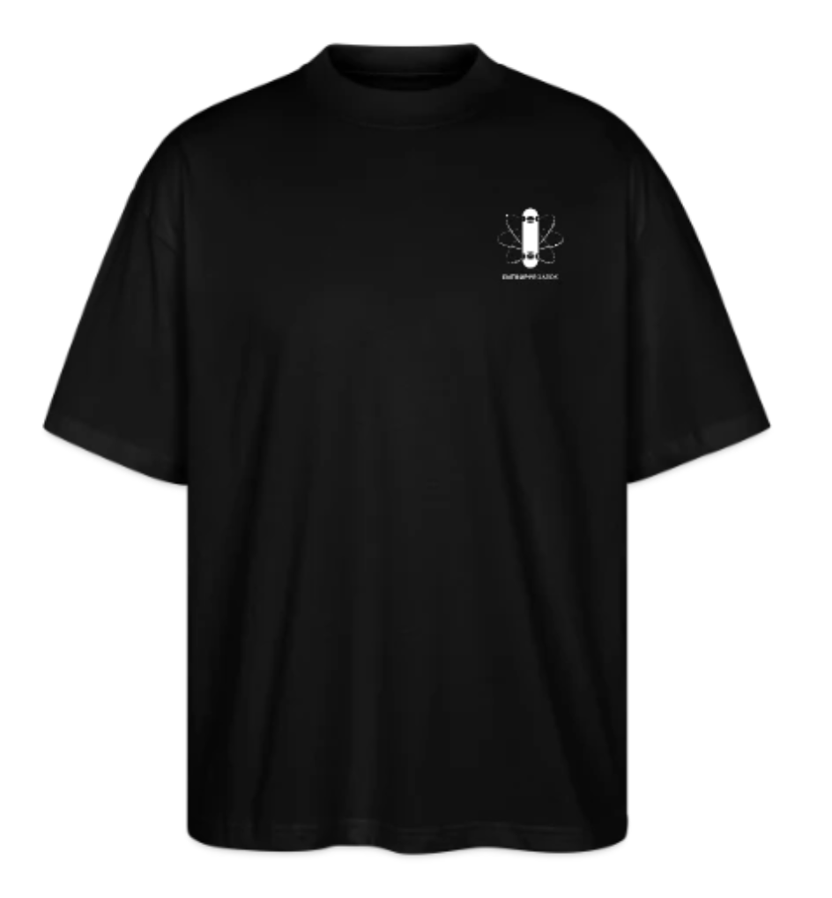
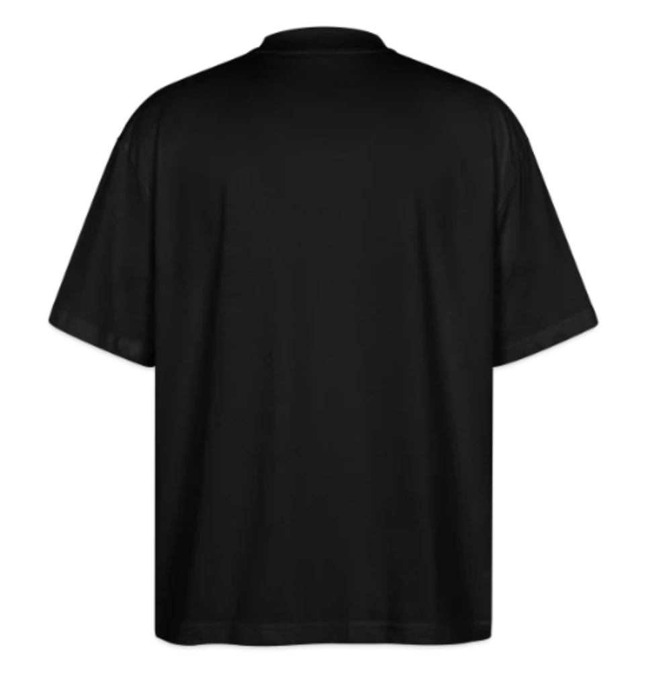
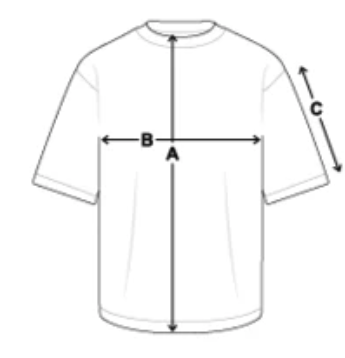
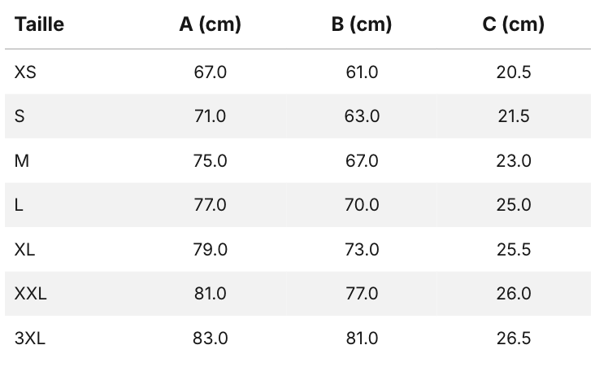

T-shirt Oversize
Un essentiel oversize minimaliste et confortable, pensé pour prolonger l’univers EntropyBoards au quotidien.


44,90 €
Livraison offerte
Le T-shirt Oversize EntropyBoards reprend l’identité visuelle de la marque
dans une version simple, épurée et facile à porter avec une coupe large.
Noir, avec le logo EntropyBoards imprimé en blanc sur la poitrine à gauche,
il mise sur un design minimaliste qui laisse toute la place à l’essentiel.
Détails du produit
- Coupe : unisexe oversize
- Coloris : noir
- Marquage : logo EntropyBoards blanc sur la poitrine à gauche
- Composition : 100 % coton bio
- Tissu : doux, 200g/m2
-
Tailles disponibles : du XS au 3XL


- Livraison : Chaque pièce est préparée à la commande, par conséquent la livraison est plus longue que des délais classique
Esprit du produit
Pensé autour d'une silhouette oversize moderne, ce t-shirt s'inspire des codes streetwear avec une coupe ample, confortable et facile à porte au quotidien.
Une t-shirt épais pour être durable, conçues pour prolonger l'esthétique d'EntropyBoards dans un esprit décontracté et intemporel.
Retour à la boutique
Commander
⚠️ Bien se référer au guide des tailles - coupe oversize : taille grand.